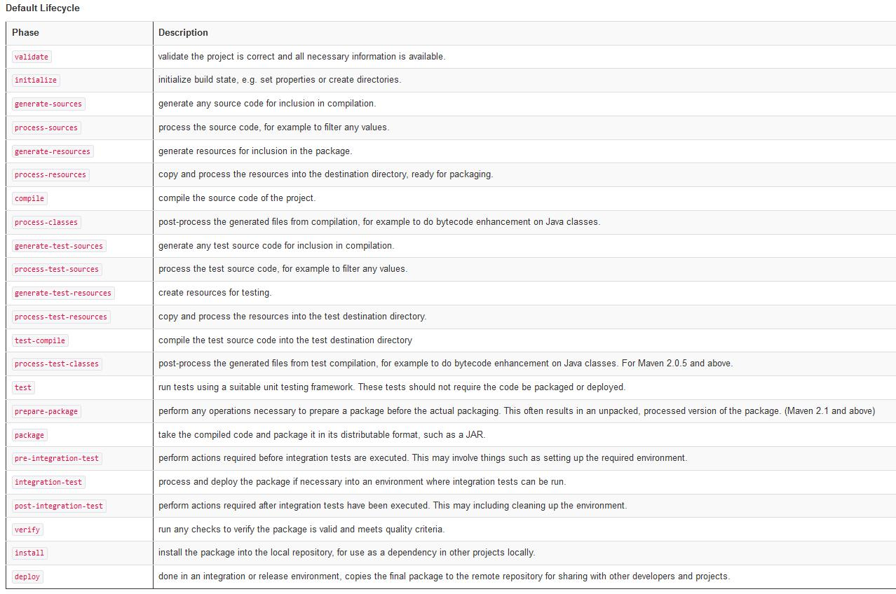
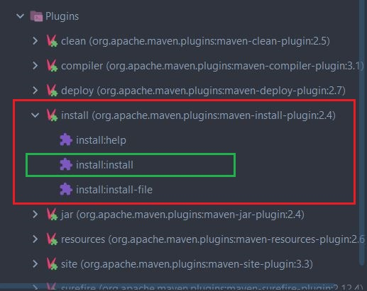
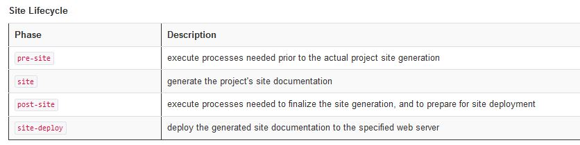
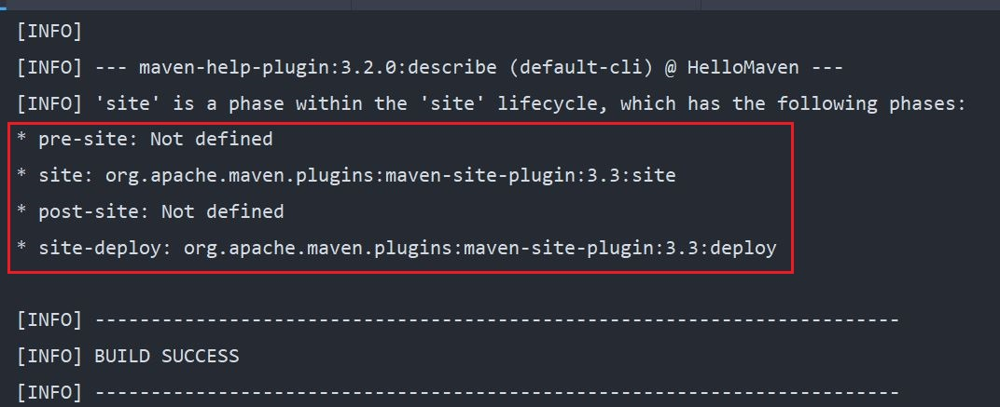
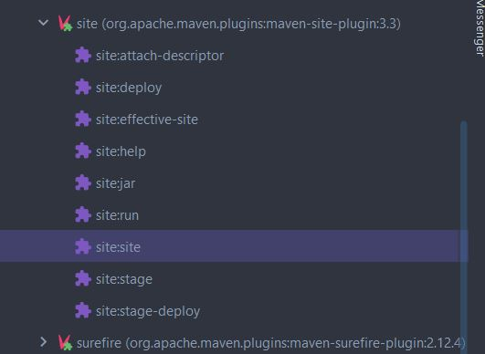
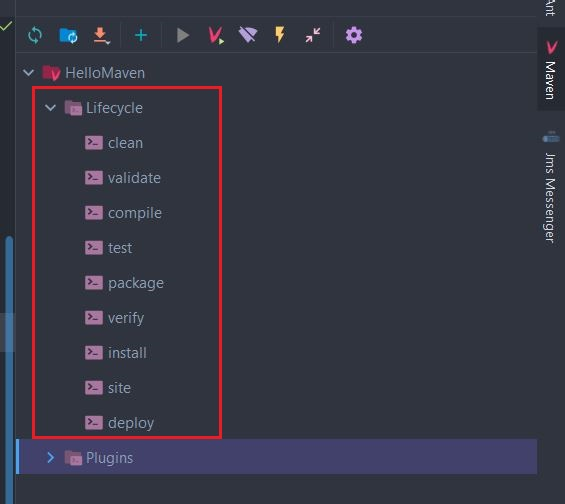
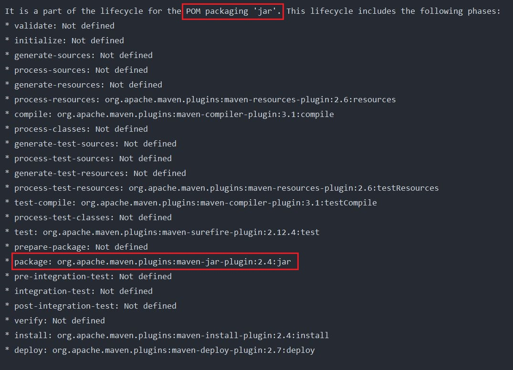

ΔΩΡΕΑΝ ΜΑΘΗΜΑΤΑ APACHE MAVEN
Στην προηγούμενη ενότητα είδαμε το clean Lifecycle και όλα τα phases
όπως και τα goals από τα οποία αποτελείται το συγκεκριμένο phase.
Σε αυτή την δωρεάν ενότητα Apache Maven, θα δούμε το default
Lifecycle όπως επίσης και πως μπορούμε να κάνουμε build ένα
Java Maven project είτε επειδή το έχουμε δημιουργήσει για πρώτη φορά, είτε γιατί
αλλάξαμε κάποιες γραμμές κώδικα και πρέπει να το δημιουργήσουμε ξανά.
Με το clean lifecycle αυτό που θέλαμε να πετύχουμε είναι να καθαρίσουμε
το project μας από προηγούμενα builds έτσι ώστε να το χτίσουμε πάλι
από την αρχή, ίσως γιατί προσθέσαμε ή γενικότερα αλλάξαμε κάποια σημεία
του κώδικα. Αυτό το επιβεβαιώσαμε όταν εκτελώντας το clean είδαμε ότι
εξαφανίστηκε o target φάκελλος και όλα τα στοιχεία που είχαν δημιουργηθεί
όταν είχαμε τρέξει για πρώτη φορά την εντολή install.
Αφού λοιπόν καθαρίσουμε τα παλαιότερα αρχεία, θέλουμε τώρα για να
δημιουργήσουμε το project από την αρχή αφού περιέχει τα καινούργια
στοιχεία που έχουμε προσθέσει στον κώδικα. Για αυτό το σκοπό, θα πρέπει
να χρησιμοποιήσουμε το default Lifecycle και πιο συγκεκριμένα θα πρέπει
να καλέσουμε το install phase. Πριν προχωρήσουμε, ας δούμε πάλι τα 23
phases από τα οποία αποτελείται το default Lifecycle.

Παρατηρώντας την λίστα, θα δούμε ότι το phase install, το
οποίο και δημιουργεί το τελικό jar αρχείο του project, βρίσκεται στην προτελευταία θέση.
Αυτό σημαίνει ότι όταν τρέχουμε την εντολή mvn install,
αυτό θα βρει το phase install, θα ψάξει να βρει ποιο plugin είναι συνδεδεμένο
με αυτό το phase και από το plugin θα τρέξει το goal install. Μπορούμε
να δούμε το goal install από την λίστα των plugins στο IntelliJ.

Η σειρά των phases όπως εμφανίζονται στην λίστα του default Lifecycle είναι
σημαντική, γιατί όποτε τρέχουμε μια εντολή θα τρέξουν όλες οι εντολές από την
αρχή της λίστας μέχρι και την εντολή την οποία εκτελέσαμε. Οπότε, όταν
τρέξαμε την mvn install εντολή, εκτελέστηκαν όλες τα πιο πάνω
phases (και κατά συνέπεια goals) με την σειρά μέχρι και την install για να
δημιουργηθεί το project μας.
Αν και δεν έχουμε τελειώσει ακόμα με το default Lifecycle, αφού
είναι και το πιο σημαντικό από όλα τα υπόλοιπα Lifecycle, ας ολοκληρώσουμε
την κουβέντα μας με μια αναφορά και στο site Lifecycle και μετά θα ξαναγυρίσουμε
στο default για να μιλήσουμε για την δημιουργία του project με
περισσότερες λεπτομέρειες.
Το site Lifecycle ορίζεται μόνο από τέσσερα phases:

Γενικότερα, το site Lifecycle δεν έχει καμία αξία χωρίς την ύπαρξη του Maven
site plugin. Το site plugin χρησιμοποιείται για να δημιουργήσει ένα HTML αρχείο
που περιέχει στοιχεία του project και κάποια reports σε σχέση με την δημιουργία
του project.
Το site plugin ορίζει οκτώ goals αλλά δύο μόνο είναι άμεσα συνδεδεμένα με τα
phases του site Lifecycle. Αυτό μπορούμε να το επιβεβαιώσουμε τρέχοντας την εντολή
mvn help:describe -Dcmd=site


Όπως παρατηρούμε από το αποτέλεσμα εκτέλεσης της εντολής, το site goal του
site plugin συνδέεται με το site phase, ενώ το deploy goal του site
plugin συνδέεται με το site-deploy phase.
Αυτό που έχουμε δει μέχρι τώρα, είναι μια λίστα από plugins τα
οποία προσφέρονται από το Maven. Τα plugins αυτά περιέχουν goals
τα οποία έχουν συνδεθεί με κάποια phases. Οπότε η επόμενη ερώτηση
είναι ποιος είναι ο ρόλος του Lifecycle στο IntelliJ?

Για να απαντήσουμε αυτή την ερώτηση, θα πρέπει πρώτα να μιλήσουμε για το τι είδος
project προσπαθούμε να δημιουργήσουμε. Γενικότερα στην Java μπορούμε να
δημιουργήσουμε δύο ειδών αρχεία – τα jars και τα wars. Τα jars είναι για
standard edition java εφαρμογές και για microservices που περιέχουν ενσωματωμένους
application servers (πχ. Spring Boot) και τα war αρχεία που είναι η καθαρή
μορφή μιας Java Web εφαρμογής. Στο δικό μας project δεν έχουμε ορίσει το
τι είδος project package θέλουμε να δημιουργήσουμε οπότε το Maven, και
κατά συνέπεια το IntelliJ, θεωρεί ότι θέλουμε να δημιουργήσουμε ένα project
σε jar μορφή. Το Lifecycle που εμφανίζεται είναι το προτεινόμενο από το
Maven για την δημιουργία ενός jar project. Αυτό που κάνει είναι να συνδυάζει
phases από όλα τα Maven Lifecycles και να δημιουργεί ένα καινούργιο ειδικά
για την δημιουργία jar projects. Κάθε phase σχετίζεται και με ένα plug in
και φυσικά με τα αντίστοιχα goals τα οποία το plugin περιέχει. Σχεδόν
όλα τα phases προέρχονται από το default Lifecycle. Επειδή όμως εξετάσαμε
το clean και το site Lifecycle ας δούμε και το default.
Τρέχουμε λοιπόν την εντολή
mvn help:describe -Dcmd=deploy

Όπως παρατηρούμε, χωρίς εμείς να το έχουμε ορίσει, το είδος του αρχείου
που θα δημιουργηθεί θα είναι jar. Είναι όμως συνετό, να ορίζουμε κάποιες
παραμέτρους στο POM ασχέτως αν είναι προκαθορισμένα από το σύστημα ή όχι.
Έτσι θα έχουμε καλύτερο έλεγχο του project. Ας προσθέσουμε λοιπόν επίσημα
την επιλογή αυτή στο POM γράφοντας
<packaging>jar</packaging>
Το POM τώρα θα πρέπει να έχει την εξής μορφή:
pom.xml
<?xml version="1.0" encoding="UTF-8"?>
<project xmlns="http://maven.apache.org/POM/4.0.0"
xmlns:xsi="http://www.w3.org/2001/XMLSchema-instance"
xsi:schemaLocation="http://maven.apache.org/POM/4.0.0 http://maven.apache.org/xsd/maven-4.0.0.xsd">
<modelVersion>4.0.0</modelVersion>
<groupId>com.mycompany</groupId>
<artifactId>HelloMaven</artifactId>
<version>1.0-SNAPSHOT</version>
<properties>
<maven.compiler.target>11</maven.compiler.target>
<maven.compiler.source>11</maven.compiler.source>
</properties>
<packaging>jar</packaging>
</project>
Η περιγραφή του κάθε ενός phase που είναι συσχετισμένο με κάποιο
plugin μπορεί να βρεθεί στο site του Apache Maven ή μπορείτε να διαβάσετε
μια γρήγορη περιγραφή στον πίνακα που έχουμε δείξει πιο πάνω. Απλά θέλω
να τονίσω το γεγονός ότι το deploy phase δεν σημαίνει ότι κάνω deploy μια
εφαρμογή σε έναν application server αλλά ότι κάνω deploy το δημιουργημένο
jar αρχείο σε ένα remote repository εκτός του υπολογιστή μας.
Τώρα, νομίζω, θα έχετε καταλάβει γιατί τρέξαμε την εντολή install όταν είχαμε
δημιουργήσει το project. Βασικά, εκτελέσαμε το phase install, το οποίο πριν
εκτελεστεί θα τρέξουν όλα τα προηγούμενα phases τα οποία περιέχουν συγκεκριμένα
goals. Τώρα η ερώτηση είναι, εσείς θα πρέπει να κάνετε κλικ επάνω στην
επιλογή install του Lifecycle πλαισίου, ή να γράψετε την εντολή (ή εντολές)
στο Execute Maven Goal? Το εύκολο θα είναι να επιλέξετε την επιλογή που σας
δίνεται στο Lifecycle, όπως έχουμε τρέξει ήδη. Αν θέλετε όμως να περάσετε
κάποια έξτρα παράμετρο στην εντολή τότε θα χρειαστεί να γράψετε την εντολή.
Η γνώμη μου είναι να εκτελείτε όλες τις εντολές μέσα από το Execute Maven
Goal το οποίο, επειδή γνωρίζει ήδη το LifeCycle και τα plugins, θα σας
βοηθήσει καθώς γράφετε τις εντολές σας.
Ποια είναι η πιο συνηθισμένη εντολή που θα τρέχετε σαν προγραμματιστές? Η απάντηση είναι:
mvn clean install
Αυτή η εντολή (βασικά είναι δύο εντολές), κάθε φορά που την εκτελείτε,
θα καθαρίζει το προηγούμενο jar, τρέχοντας όλα τα phases από το
clean Lifecycle και μετά θα τρέξει όλα τα phases από το default
Lifecycle μέχρι και την install phase δημιουργώντας το τελικό jar του project.
Αν θέλουμε να ανακεφαλαιώσουμε, από την πρακτική πλευρά, τι έχουμε μάθει
για το Maven μέχρι τώρα, θα λέγαμε ότι γνωρίζουμε το πως να δημιουργήσουμε
ένα Java Maven Project μέσα από το IntelliJ, πως να προσθέσουμε το properties
για να τρέξει το build process σωστά με την Java 11, πως να καθαρίζουμε και
πως να δημιουργούμε καινούργιο jar και τέλος πως να εκτελούμε το project
μέσα από το IntelliJ. Τέλεια, μέχρι αυτό το σημείο, αν το project σας
δεν χρειάζεται καμία εξωτερική βιβλιοθήκη, όπως πχ Hibernate, τότε μπορείτε
να δημιουργήσετε προγράμματα Java, να γράψετε κώδικα και να τα εκτελέσετε.
Στην επόμενη ενότητα θα κλείσουμε την αναφορά μας στο Apache Maven Lifecycle.
Michail Kassapoglou Admin
Γεια σας, είμαι ο Μιχάλης Κασάπογλου και θα σας διδάξω με τον ποιο απλό
τρόπο να χρησιμοποιείτε το Apache Maven για την δημιουργία όλων των Java και Java EE project σας. Ασχολούμαι με την τεχνική εκπαίδευση
σε διάφορες πλατφόρμες, λειτουργικά συστήματα και γλώσσες προγραμματισμού
πάνω από 20 έτη. Κατέχω έναν αρκετά μεγάλο αριθμό πιστοποιήσεων Microsoft και Oracle
και σαν Τraining Lead στην Intrasoft έχω την δυνατότητα να αναβαθμίζω συνεχώς
τις γνώσεις μου και να έχω άμεση επαφή με αληθινά projects και εξειδικευμένες μεθόδους
ανάπτυξης εφαρμογών που έχουν υψηλές απαιτήσεις.
Για τυχόν ερωτήσεις σας μπορείτε να επικοινωνήσετε μαζί μου
στο Michail.Kassapoglou@gmail.com
Σας ευχαριστώ που επισκεφτήκατε την ιστοσελίδα μου.